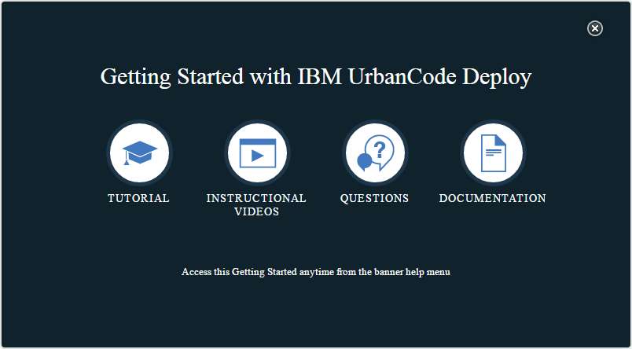

Customizing the Getting Started window
You can customize the URLs that are contained in the Getting Started with IBM UrbanCode Deploy window that is displayed the first time that a user logs in to the HCL® UrbanCode™ Deploy server.
The first time a user logs in to an HCL UrbanCode Deploy server, the following Getting Started with IBM UrbanCode Deploy window is displayed:

By clicking the TUTORIAL, INSTRUCTIONAL VIDEOS, QUESTIONS, and DOCUMENTATION links, you can access content that is designed to assist new users as they begin working with the server. To update the URLs that are contained in the links on this window, you add the URLs to a settings file.
- On the HCL UrbanCode Deploy server host, open the /server_installation/server/appdata/conf/server/getting-started-custom-urls.properties file. For the server_installation value, specify the folder in which the HCL UrbanCode Deploy server is installed.
-
Add URLs to the properties in the file. You can provide override values for any number of the available URLs.
- To change the TUTORIAL link, provide a value for the server.getting_started_tutorial.url parameter.
- To change the INSTRUCTIONAL VIDEOS link, provide a value for the server.getting_started_video.url parameter.
- To change the QUESTIONS link, provide a value for the server.getting_started_question.url parameter.
- To change the DOCUMENTATION link, provide a value for the server.getting_started_documentation.url parameter. For example, to direct the links to custom content on your intranet, the properties in the getting-started-custom-urls.properties file might resemble the following code:
``` server.getting_started_tutorial.url=http://your_intranet.com/tutorials server.getting_started_question.url=http://your_intranet.com/forum server.getting_started_video.url=http://your_intranet.com/videos server.getting_started_documentation.url=http://your_intranet.com/docs
```
-
Save the getting-started-custom-urls.properties file.
- Restart the server. See Starting and stopping the server.
When users access the Getting Started with IBM UrbanCode Deploy window, the links lead to the URLs that you specified.
To return the links to their default values, remove the URLs from the getting-started-custom-urls.properties file and restart the server.
Parent topic: Server settings and configuration